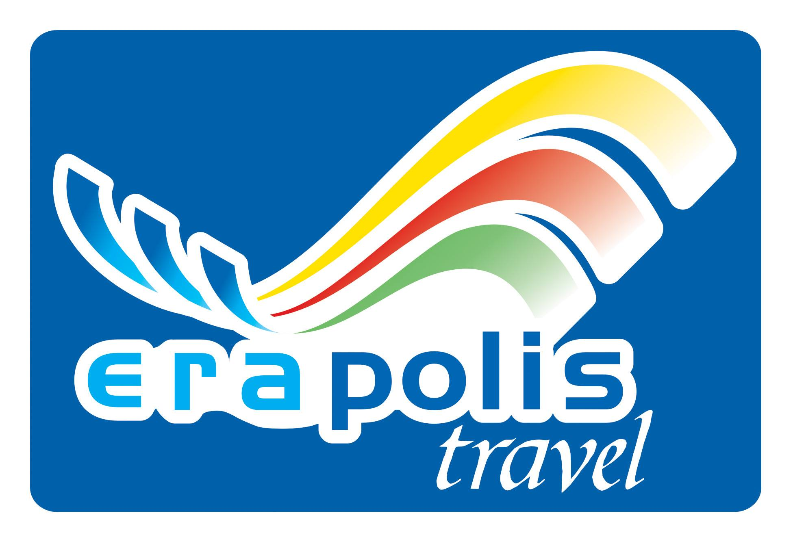

Nossa empresa
A Origem da Erapolis Travel

A Erapolis Travel iniciou suas atividades em 2006, fruto da fusão com outra operadora, ambas sob a mesma propriedade. O objetivo principal era dar continuidade e expandir uma organização turística com foco especial em viagens de grupo. Com mais de 25 anos de experiência acumulada no setor de viagens de grupo, a Erapolis Travel aproveitou a estrutura operativa da fusão anterior para garantir um serviço de alta qualidade. Nossa abordagem é marcada pela confiabilidade, flexibilidade e consultoria logística precisa, essenciais para atender às necessidades dos viajantes em grupo. Nossa expertise se estende a destinos considerados complexos e desafiadores, como o Oriente Médio, o Extremo Oriente, a Índia e a América do Sul. Além disso, atendemos à demanda de viagens para a Europa, organizando excursões de grupo para os principais destinos europeus, frequentemente com a inclusão de voos especiais para maior comodidade dos nossos clientes.
A Organização
Hoje, a equipe da Erapolis Travel é composta por profissionais organizados em uma estrutura linear, não vertical, que administra com rapidez e eficiência os pedidos de qualquer cliente. Experiência, profissionalismo e paixão caracterizam o diálogo da nossa equipe poliglota com todos os clientes, para poder atender às diversas exigências, elaborar e submeter propostas sempre únicas e personalizadas.
A Operadora
Graças à experiência adquirida no setor de viagens de grupo, a Erapolis Travel desenvolve progressivamente sua atividade organizativa, direcionada a propostas de lazer, turístico-culturais e, sobretudo, ao setor de peregrinação. Os primeiros destinos a serem programados são, naturalmente, a Europa, o Oriente Médio, o Extremo Oriente e a Índia, apresentados em todas as suas complexidades, mantendo a flexibilidade necessária para a realização de viagens personalizadas para cada cliente.
Setor Exportativo
Nosso setor exportativo é capaz de oferecer alternativas e propostas diferenciadas, propondo viagens e férias de acordo com as exigências e disponibilidades de cada grupo.
Setor Receptivo
Nosso setor receptivo se destaca pela oferta de serviços de alto nível e, sobretudo, pela profissionalidade e assistência da nossa equipe poliglota.